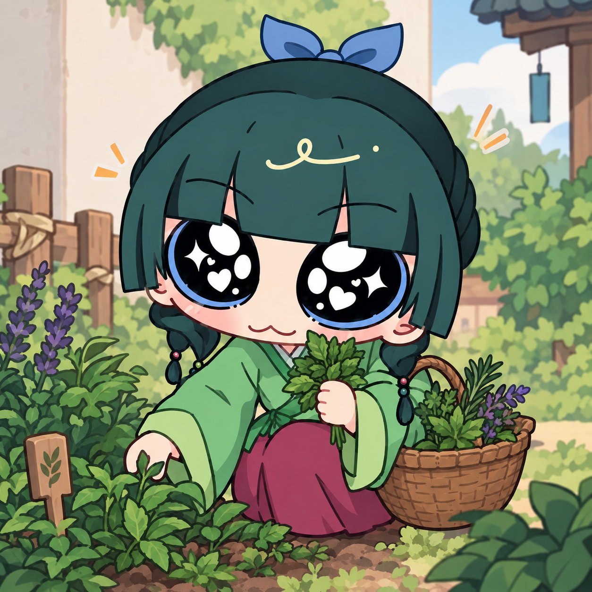

🌱 Erva do jardim

O que é Uma planta delicada que cresce perto dos jardins do palácio.
Para que serve Ótima para investigações: quem entende de plantas descobre muita coisa só de observar.
Cuidado Parece inofensiva, mas não deve virar chá.